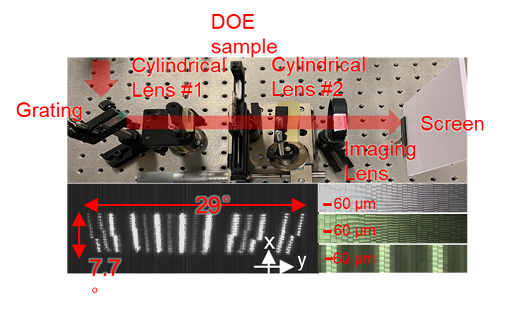
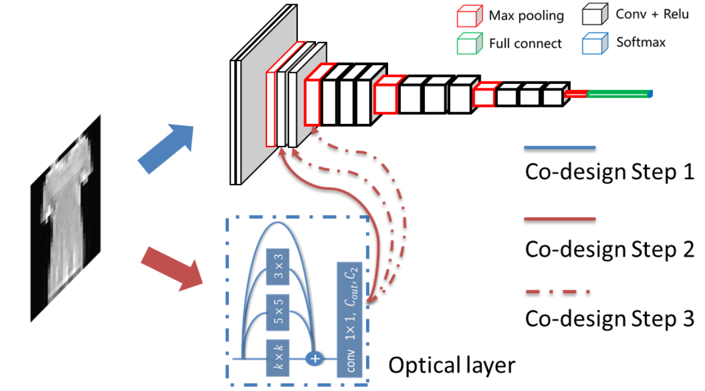
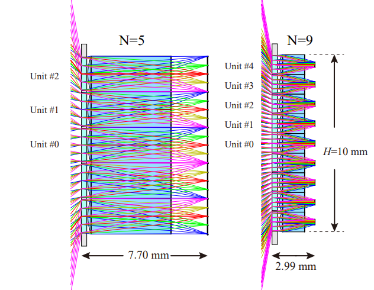

|
Zihan Zang I am a PhD student in the Electronic Engineering at Tsinghua University, where my advisor is Yi Luo and my co-advisor is Connie Chang-Hasnain. I received my bachelor's degree from the Department of Electronic Engineering at Tsinghua University. email | cv | google scholar | github |
I work on optical systems and the design/fabrication of diffractive/refractive optical elements (DOEs/ROEs). Particular problems I am interested in include LiDAR (laser radar), 3D sensing and computational imaging. For the LiDAR part, I mainly work on beam steering technology such as dispersion-based scan method (spectral scan). I am also interested in physics-based modeling. I developed end-to-end optimized design/fabrication method of diffractive optical elements, which combines lithography modeling and physical optics modeling. I also developed refractive optical elements or freeform optics design by using differentiable ray tracing.
Publications & Projects
|  |
Spectrally Scanning LiDAR Based on Wide-Angle Agile Diffractive Beam Steering |
|  |
DAD vision: opto-electronic co-designed computer vision with division adjoint method |
 |
Ultrafast parallel single-pixel LiDAR with all-optical spectro-temporal encoding |
 |
Solid-state FMCW LiDAR with two-dimensional spectral scanning using a virtually imaged phased array |
 |
Virtually imaged phased-array-based 2D nonmechanical beam-steering device for FMCW LiDAR |
|  |
Planar multi-aperture fish-eye lens using metagrating |